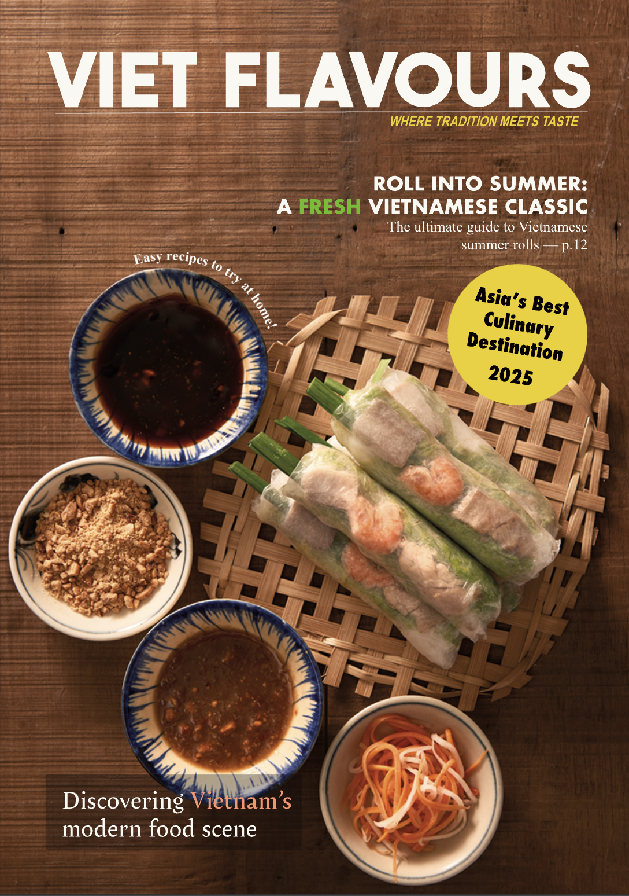

Bài Chòi: From Daily Entertainment to UNESCO Intangible Cultural Heritage
Exploring the historical and cultural significance of Bài Chòi in Central Vietnam.
Read ArticleHere you will find a collection of my work including feature articles, photography, and content that reflect my interest in storytelling, culture, and language learning.
Scroll down for more!

A magazine project exploring Vietnamese local stories, culinary culture and modern food scenes.
Read SampleExploring the historical and cultural significance of Bài Chòi in Central Vietnam.
Read Article
A reflective feature on tourism, identity, and storytelling in Hoi An.